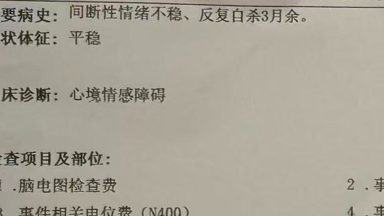
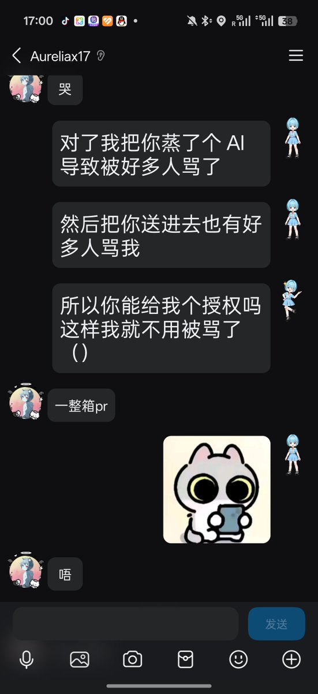
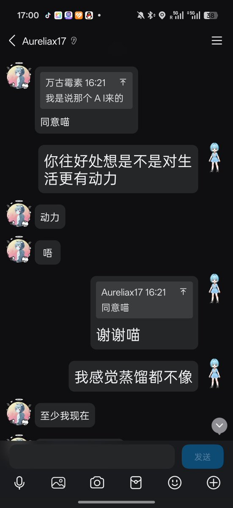
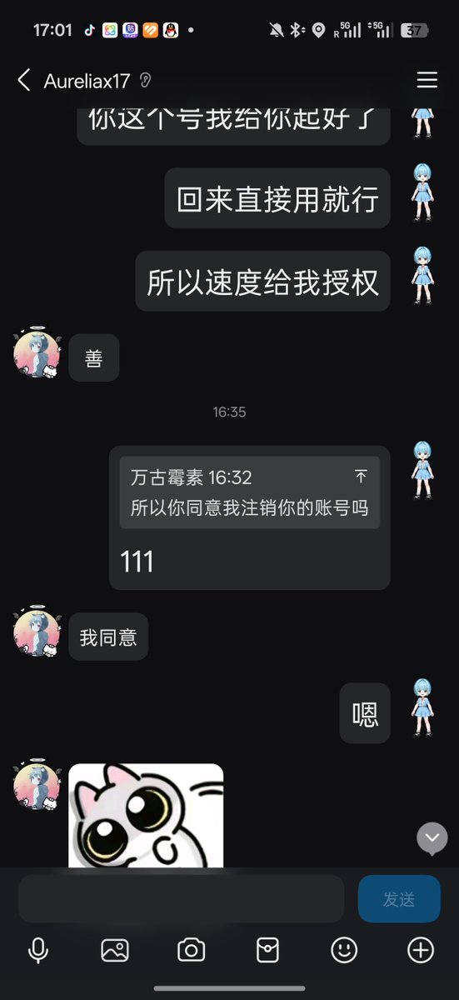
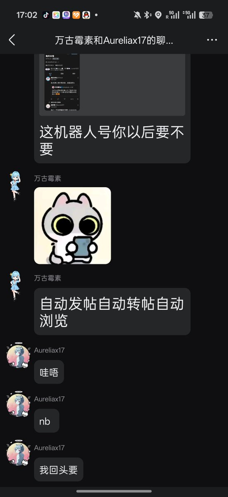

@YuwenMewo






这个账号确实是唐毓文创建的！
不过现在已经是本人接管了
17和父亲达成了协议
因为住院导致的病情反而恶化（强制住院导致抑郁转双相）和多种原因，以及17的努力。
17大概率会在这周内出院
但是17的手机还被警方调查使用中，不知道什么时候17才能恢复正常生活
17现在状态好不少了喵！ https://t.co/83Oj7ATrqY
不过现在已经是本人接管了
17和父亲达成了协议
因为住院导致的病情反而恶化（强制住院导致抑郁转双相）和多种原因，以及17的努力。
17大概率会在这周内出院
但是17的手机还被警方调查使用中，不知道什么时候17才能恢复正常生活
17现在状态好不少了喵！ https://t.co/83Oj7ATrqY